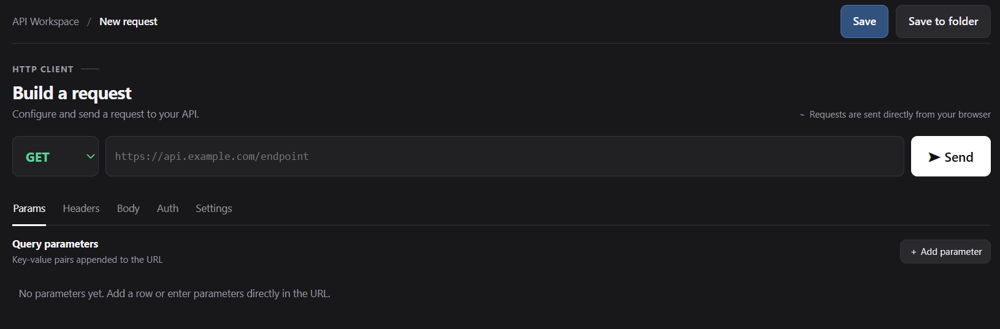
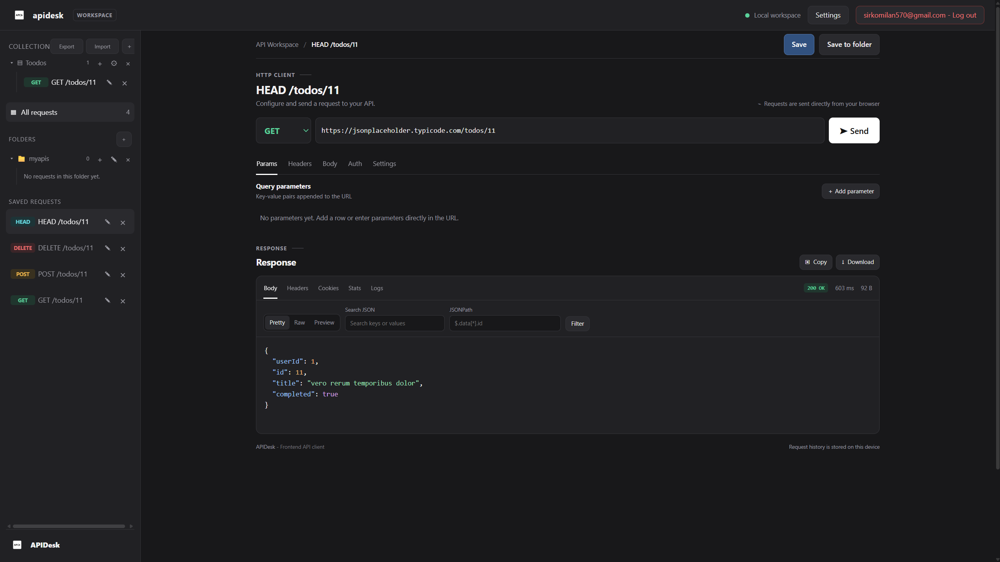

Getting started
Learn what APIDesk does, send your first API request, and find your way around the workspace.
What is APIDesk?
APIDesk is a browser-based workspace for creating and sending HTTP requests. Use it to try an endpoint, inspect its response, and keep useful requests organized for later.
You can work with common HTTP methods, parameters, headers, authentication and request bodies. When you sign in, you can save requests in folders and collections and return to them later.
Requests are sent directly from your browser. The API you call must allow browser requests through its CORS policy.
Your first request
Follow these steps to send a request from the APIDesk workspace.
- 1
Open the workspace
Select Go to workspace to open the request editor.
- 2
Choose an HTTP method
Select the method your API expects, such as
GETto retrieve data orPOSTto send data. - 3
Enter the endpoint URL
Paste the full endpoint address into the URL field, for example
https://api.example.com/users. - 4
Add request details if needed
Use the Params, Headers, Body or Auth tabs to provide the values required by your API.
- 5
Send and inspect the response
Press Send. The response section displays the returned body, status, headers and timing.

Workspace guide
The workspace is split into a request editor and a response panel, with your saved work in the sidebar.
- SidebarBrowse collections, folders and saved requests. Sign in to manage and sync saved items with your account.
- Request editorSet the method and URL, then configure Params, Headers, Body, Auth and request Settings.
- Response panelInspect the response body, headers, cookies, status, timing and request logs after sending.
